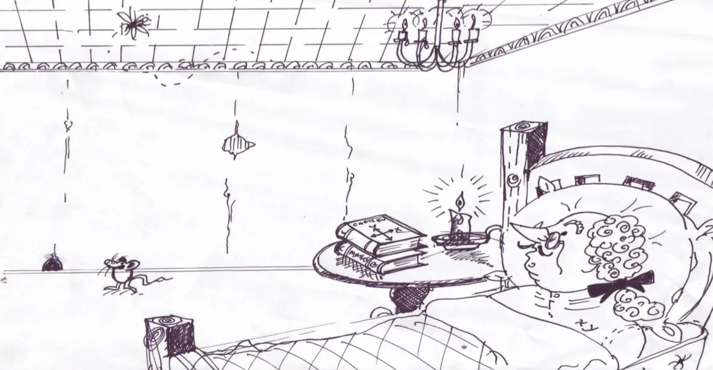
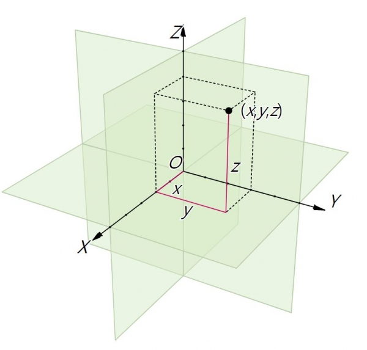
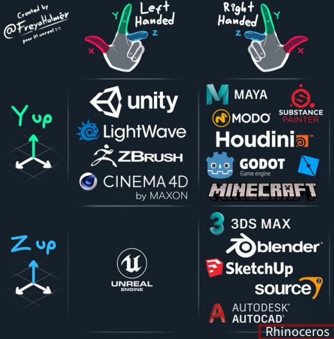

1-1. It all started with a fly
모든것은 파리때문에

3D가 왜 단순히 디자인의 영역이 아닌 수학, 철학, 컴퓨터등 모든 영역을 다루는지 한번 역사 속 예를 통해 이야기 해드릴게요,
르네 데카르트는 "나는 생각한다, 고로 존재한다"는 유명한 말을 남긴 철학자이자 수학자입니다.
이 말은 그가 철학자로서 어떤 사고방식을 가졌는지를 잘 보여줍니다.
데카르트는 모든 지식을 의심하고, 명확하고 확실한 것만을 진리로 받아들이자는 방법론을 제안했습니다.
데카르트는 이런 방식으로 신의 존재를 증명하려 했으며,
물질 세계의 진리를 찾아내는 논리적인 순서를 세웠습니다.
이에 따라 물질 세계는 수학적으로 계산 가능하며,
계산을 통해 인간이 자연을 이해하고 지배할 수 있다고 주장했습니다.
데카르트의 이러한 철학적 방법론은 많은 학자들에게 영향을 미쳤고, 근대 자연과학과 수학의 발전을 이끌었습니다.
서양이 중세의 사고방식에서 벗어나 근대 철학과 과학으로 나아가는 데 결정적인 역할을 했습니다.
이 때문에 많은 사람들이 데카르트를 '근대 철학의 아버지'라고 부릅니다.
데카르트 좌표계
데카르트와 관련하여 빼놓을 수 없는 것은 바로 좌표 평면입니다.
데카르트는 건강이 좋지 않아 많은 시간을 침대에서 보냈으며,
어느 날 천장에 앉아있던 파리를 관찰하고 있었습니다.
이 파리는 계속 움직이며 다른 위치에 앉았는데,
데카르트는 이 파리의 위치를 객관적으로 나타낼 수 있는 방법을 고민하다,
천장을 가로축과 세로축으로 나누고, 순서쌍으로 파리의 위치를 나타내는 직교 좌표계를 고안했습니다.
바로 여기서 이 좌표계에 의해 우리는 3D 형상을 수학적으로 구현할 수 있게 됩니다.
데카르트 좌표계는 X, Y, Z 세 축을 사용하여 3차원 공간에서의 위치를 표현합니다.
이는 모든 객체의 위치, 방향, 크기를 정의하는 기본적인 방법입니다.

왜 중요할까요?
데카르트 좌표계의 중요성은 단순히 위치를 특정하는 것을 넘어서, 현대 과학과 기술, 그리고 우리의 일상 생활에 깊이 뿌리내리고 있습니다.
기하학과 대수학의 연결: 데카르트 좌표계는 기하학적 형상과 대수적 방정식 간의 연결을 제공합니다.
이를 통해 복잡한 기하학적 문제를 대수적으로 해결할 수 있게 되었으며, 수학의 많은 분야에서 혁신을 가능하게 했습니다.
3차원 모델링과 시각화: 3D 모델링 소프트웨어는 데카르트 좌표계를 사용하여 공간 내의 객체를 정확히 표현합니다.
이는 건축, 엔지니어링, 게임 개발, 영화 제작 등 다양한 분야에서 복잡한 3차원 객체와 환경을 생성하고 조작하는 데 필수적입니다.
과학적 발견과 탐험: 물리학에서 천문학에 이르기까지, 데카르트 좌표계는 자연 현상을 모델링하고 이해하는 데 중추적인 역할을 합니다.
우주의 심오한 구조에서 지구상의 작은 생물체까지, 모든 것을 수학적으로 설명하고 예측하는 데 기여합니다.
기술 혁신의 기반: GPS 기술에서 로봇 공학, 가상 현실에 이르기까지, 데카르트 좌표계는 정밀한 위치 결정과 객체의 움직임을 제어하는 기술의 핵심입니다.
이 좌표계 없이는 현대 기술의 많은 발전이 불가능했을 것입니다.
프로그램과 좌표계
다양한 3D 모델링 프로그램은 좌표계를 약간 다르게 해석합니다.3D 모델링 프로그램에서 사용하는 좌표계는 'Z-up' 또는 'Y-up'으로 구분될 뿐만 아니라, 이들 좌표계는 '오른손 좌표계(Right-Handed Coordinate System)' 또는 '왼손 좌표계(Left-Handed Coordinate System)'로도 구분됩니다. 이 구분은 공간의 세 축(X, Y, Z) 간의 방향성과 관련이 있으며, 3D 공간에서의 회전 방향, 법선 벡터의 방향 등을 결정하는 데 중요한 역할을 합니다.:
오른손 좌표계(Right-Handed Coordinate System): 오른손을 사용하여 방향을 가리킬 때, 엄지손가락이 Z축의 '위' 방향을 가리킵니다.
왼손 좌표계(Left-Handed Coordinate System): 왼손을 사용하여 방향을 가리킬 때, 엄지손가락이 Z축의 '위' 방향을 가리킵니다.

Y-up:
라이노 (Rhino)
Z-up:
스케치업 (SketchUp)
캐드 (AutoCAD)
레빗 (Revit)
블렌더 (Blender)
이러한 차이를 이해하고 각 프로그램의 좌표계에 맞게 작업하는 것은 3D 모델링에서 매우 중요합니다. 프로젝트를 다른 소프트웨어로 이전할 때 이러한 차이점을 고려해야 합니다.